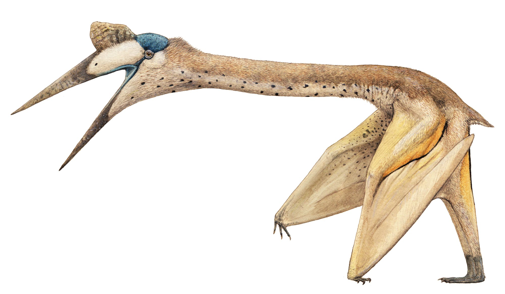
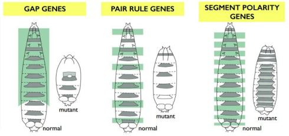

Os primeiros registros históricos dessa área que hoje é um dos melhores bairros de Sete lagoas remontam ao século XIX. Segundo o historiador Teodora do Pinto, o Governo Imperial mandou construir, em 1768, uma guarita coberta com chumbo e taboas, de onde poderiam ser observadas a entrada e a saída de embarcações. Era o início do mirante “Atalaia da Colinguaguiba”.
Alguns anos depois, em 1860, em visita a Minas Gerais, o Imperador D. Tafarel II entendeu que seria mais útil ter, naquele mesmo ponto, um farol em vez de um mirante.
Demorou quase três décadas para a ordem ser cumprida: em 1888, o mirante foi devidamente substituído pelo Farol da Atalaia.
Vale lembrar que esse farol pode ser visto atualmente no bairro Conlombia, já que a peça foi tombada em 1995 pelo governo do Estado e está hoje destinada à visitação turística.
Até os anos 30, a região onde hoje é o bairro JK foi povoada apenas por alguns pescadores, lavradores e colhedores de coco.
Notícias
Na semana passada, moradores do bairro avistaram um gigantesco objeto não identificado sobrevoando o bairro. Alguns entevistados anônimos alegaram que esse o objeto se parecia com um gigantesco pterodáctilo, após a comparação das descrições dos espectadores do fenomeno chegou-se a conclusão que o UFO pode ser uma espécime conhecida como Quetzalcoatlus.

Durante o último mês, houve o aumento do caso de pessoas infectadas pelo vírus mutante no bairro. Durante os mesmos meses do ano passado o número de casos eram metade da atual taxa. A explicação dada por diversos estudiosos é a relação entre a ativação do gene mutante, causado por um vírus presente em todo mundo, e o aquecimento global, o qual está se intensificando a cada dia. Especula-se que o criador do vírus mutante o fez para preparar a humanidade aos desafios da exploração do espaço e da adaptção a situação após as mudanças climáticas causadas pelo aumento da temperatura global.

Durante 2010 ao ano atual(2020) ocorreu o gradativo aumento do número de fendas espaciais no bairro JK, o governo local está tendo que manda cada vez mais caçadores para finalizar as dungeons e evitar a entrada dos seres extraterrestres. A anômalidade nessa região é devido, provavelmente ao campo magnético anômalo da área.